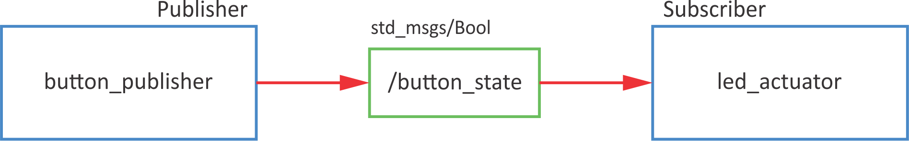
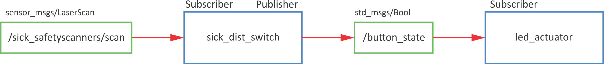

Topics
Topic is:
- a communication channel through which nodes exchange messages
- one-way messaging (publisher> subscriber)
- anonymous
- topic has its own message type (list of standars message types)
- ROS master takes care of the proper publisher/subscriber connection
- each node can have multiple publishers/subscribers for different topics
Example
Turn on LED on button press.

Publisher
Syntax for publisher:
pub = rospy.Publisher('/topic_name', msg_type, queue_size=10)
Example code:
| button_publisher.py |
|---|
| #!/usr/bin/env python
import rospy
import RPi.GPIO as GPIO
from std_msgs.msg import Bool
# buttons GPIO pins
# button 1 - gpio 11
# button 2 - gpio 12
class rpi_button():
def __init__(self):
# init variables
self.BUTTON_GPIO = 11
# set GPIO kot BCM
GPIO.setmode(GPIO.BCM)
# set button IO as input
GPIO.setup(self.BUTTON_GPIO, GPIO.IN)
# set loop frequency to 10 Hz
self.rate = rospy.Rate(10)
# define publisher
# rospy.Publisher("topic_name", varType, queue_size)
self.pub = rospy.Publisher('/button_state', Bool, queue_size=10)
self.ctrl_c = False
rospy.on_shutdown(self.shutdownhook)
def read_button(self):
while not self.ctrl_c:
# read GPIO pin
gpio_state = GPIO.input(self.BUTTON_GPIO)
# define msg as Bool variable
self.msg = Bool()
# msg has a data "data"
self.msg.data = gpio_state
# send msg
self.publish_once()
def publish_once(self):
"""
This is because publishing in topics sometimes fails the first time you publish.
In continuous publishing systems, this is no big deal, but in systems that publish only
once, it IS very important.
"""
while not self.ctrl_c:
connections = self.pub.get_num_connections()
if connections > 0:
self.pub.publish(self.msg)
#rospy.loginfo("Msg Published")
break
else:
self.rate.sleep()
def shutdownhook(self):
# works better than the rospy.is_shutdown()
# this code is run at ctrl + c
# clear all GPIO settings
GPIO.cleanup()
self.ctrl_c = True
if __name__ == '__main__':
# initialise node
rospy.init_node('button_state_publisher', anonymous=True)
# initialise class
btn = rpi_button()
try:
btn.read_button()
except rospy.ROSInterruptException:
pass
|
To test the code run
rosrun rpi_feros button_publisher.py
check the list of topics (look for
/button_state)
Then listen to that topic
rostopic echo /button_state -c
and press the button on RaspberryPi.
Subscriber
Syntax for subscriber:
sub = rospy.Subscriber('/topic_name', msg_type, callback_fcn)
Example code:
| led_actuator.py |
|---|
| #!/usr/bin/env python
import rospy
from std_msgs.msg import Bool
import RPi.GPIO as GPIO
# GPIO za LED:
# Green 1 - GPIO 2
# Green 2 - GPIO 3
# Yellow 1 - GPIO 4
# Yellow 2 - GPIO 5
# Red 1 - GPIO 6
# Red 2 - GPIO 7
class rpi_led():
def __init__(self):
# init variables
self.LED_GPIO = 7
# set GPIO kot BCM
GPIO.setmode(GPIO.BCM)
# set all leds
for ii in range(2,8):
# set IO as outputs
GPIO.setup(ii,GPIO.OUT)
# define subscriber
# rospy.Subscriber('topic_name', varType, callback)
self.sub = rospy.Subscriber('/button_state', Bool, self.button_state_callback)
self.ctrl_c = False
rospy.on_shutdown(self.shutdownhook)
def button_state_callback(self, msg):
# the code that is executed when data is received
# turn on LED
GPIO.output(self.LED_GPIO, msg.data)
def resetLed(self):
# reset all leds
for ii in range(2,8):
# turn off all leds
GPIO.output(ii,False)
def shutdownhook(self):
# works better than the rospy.is_shutdown()
# this code is run at ctrl + c
# clear all settings
GPIO.cleanup()
self.ctrl_c = True
if __name__ == '__main__':
# initialise node
rospy.init_node('led_actuator')
# initialise class
led_act = rpi_led()
# reset leds
led_act.resetLed()
try:
# loop
rospy.spin()
except rospy.ROSInterruptException:
pass
|
To test the code run
rosrun rpi_feros led_actuator.py
After that check topics (loook for /button_state):
Use rostopic pub to turn LED on and off:
rostopic pub /button_state std_msgs/Bool "data: True"
rostopic pub /button_state std_msgs/Bool "data: False"
To test both (publisher and subscriber), run each in the invidual terminal:
rosrun rpi_feros button_publisher.py
and
rosrun rpi_feros led_actuator.py
When pressing the button on RPi, the LED should turn on.
DEBUG
rostopic -h - rostopic helprostopic list - list of all active topicsrostopic echo <topic name> - listen to selected topic-c - clear output each time-n2 - print only 2 outputsrostopic info <topic name> - information about topicrostopic pub <topic name> + Tab for autocomplete - publish data-1 - publish only once-r5- publish with 5 Hz
Exercise
Turn on LED if the object is closer than 0.2 m.
